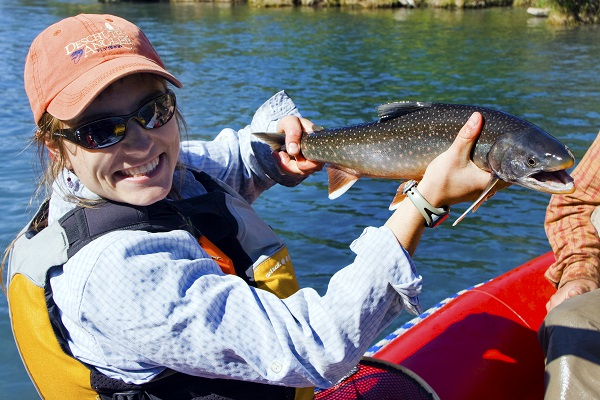

ABOUT ME
Welcome to my website!
I grew up in Anchorage, spent summers commercial fishing in Prince William Sound, and found my way into fisheries science by counting salmon for the Alaska Department of Fish and Game in Bristol Bay. I received both my master’s and doctorate from Oregon State University; my masters from the Department of Fisheries and Wildlife and my doctorate from Department of Integrative Biology.

My research combines evolutionary theory, quantitative methods, and field studies to answer questions about why fish do what they do, and how they may adapt to future conditions. Although I have primarily focused on fish ecology and evolution, my research applies broadly to the study of evolution and its connections with ecology.
Please see my CV for more information.
MY WORK
My current research program was spawned (pun intended) from a single interesting fish species known by two names. Steelhead and rainbow trout are two names for the same species: a salmonid known as Oncorhynchus mykiss. Steelhead are born in streams, migrate to the ocean as juveniles, and return to spawn in streams. They are big, silvery, and look like a salmon. Rainbow trout are also born in streams, but remain there for their entire life cycle. They are small, camouflaged, and do not look like a salmon. Yet, from observations and genetics, we know steelhead and rainbow trout mate with one another and can produce some offspring that migrate (i.e., become a steelhead) and others that remain in the stream (i.e., become a rainbow trout).
I wanted to know why do they do this.
It turns out that steelhead and rainbow trout are not that unique. There are an impressive number of species in which migratory and resident types coexist. Other fish species, as well as ungulates, bats, birds, insects, amphibians and reptiles all have species with migrant and resident types coexisting. (You can learn more about them here).
The diversity of species that contain migrants and residents makes the question of why all the more interesting. My research has focused on different aspects of this question, and you can find descriptions of that research below.
INTERESTS
Fish ecology
Evolution
Life-cycle models
Adaptive dynamics
Life-history variation
Bayesian statistics
Time-series models
Game therory
PROJECTS
Click the boxes to learn more
What characteristics are associated with migration and which with residency?
How does natural selection maintain both migrants and residents? And, more generally, how does natural selection maintain life history variability?
Sex-ratio balancing: A method for estimating the fraction of migrants and residents
Two-sex life cycle model
×
What characteristics are associated with migration and which with residency?
Although most of the work on this topic has focused on individual differences in growth, lipids, and metabolism, the role of sex was largely ignored. I studied the role of sex, specifically whether females were more likely than males to migrate. In steelhead and rainbow trout, there is good reason that females should be more likely than males to migrate. Egg production takes more energy than sperm production, and migration leads to a higher growth environment in the ocean. I have shown that females are more likely than males to be steelhead, throughout their range. This pattern also hold true along gradients of migration difficulty and freshwater productivity, which suggests that while the overall proportion of steelhead may change, the steelhead sex ratios remain constant.
Female-biased migration is a pattern that holds in majority of partially migratory taxa, but not in all. Because sex plays such a strong role in which individuals migrate, population models must take into account both sexes (which is something I’m working on here) and because the result is so consistent, I have used it in a model to predict the proportion of migrants and residents (see below).
×
How does natural selection maintain both migrants and residents? And, more generally, how does natural selection maintain life history variability?
This question drives much of my current research. Natural selection is thought to be a process in which the type with the highest fitness ‘wins’. Under this model, populations should be composed of only migrants or only residents (which ever has higher fitness).
Yet, that is not what we see in nature. Not only are migratory and resident phenotypes common, so is heritable variation in all sorts of other traits, such as age at migration, age at reproduction, egg size, or fecundity. This variation is thought to be an important component of population resilience (i.e., the portfolio effect). So, how does natural selection maintain this variation?
My research has shown that natural selection can maintain partial migration through feedbacks associated with some forms of density-dependent competition. Density-dependent competition can affect fitness in such that fitness is highest at low densities, such that the highest fitness occurs when a mother has offspring of both types. This is akin to frequency-dependent selection, but is driven by competition. Not all forms of competition lead to this feedback, however. If competition occurs between phenotypes (i.e., migrants and residents compete for the same resource), fitness is not frequency dependent and will not create the feedback necessary for partial migration. Whereas if competition occurs within the phenotypes (i.e., migrants compete only among themselves and residents compete only among themselves), fitness is frequency and density dependent sufficient for natural selection to lead to partial migration.
I am currently adding condition-dependence and phenotypic plasticity to this model to understand how competition and individual condition work in tandem to generate phenotypic variation.
×
Sex-ratio balancing: A method for estimating the fraction of migrants and residents
Although there is considerable interest in partially migratory species, most of the theoretical work remains untested because of the difficulty in measuring the proportion of migrants and residents, or the ‘migration propensity’. I have been developing a new method for estimating migration propensity that relies on the characteristic that females are more likely than males to migrate. By measuring sex ratios of the migrants and residents, one can estimate the migration propensity of a population. The relationship between sex ratios and migration propensity is shown in the figure below. Although this method is still in development, I think it holds a lot of promise for collecting data on a fundamental characteristic of partially migratory species (i.e., their migration propensity) and has direct applications to conservation and management of the species.
×
Two-sex life cycle model
Although partial migration is a widespread phenomenon, little is known about how such species will respond to habitat restoration, climate change, land use changes. In species where females are more likely to migrate, such as steelhead and rainbow trout, predicting population responses requires a two-sex model. In collaboration with Chris Jordan at NOAA, I am currently developing a two-sex life cycle model for steelhead and rainbow trout to predict population responses in the Columbia River basin.